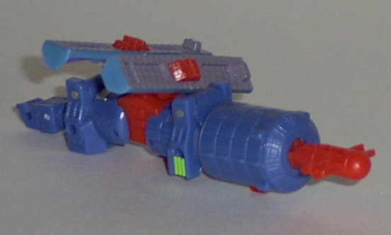
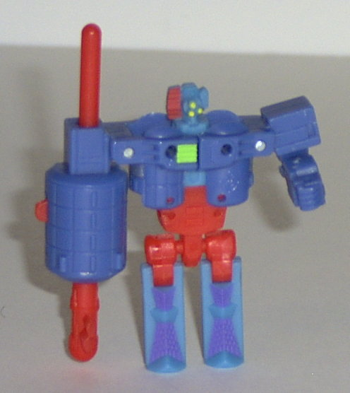
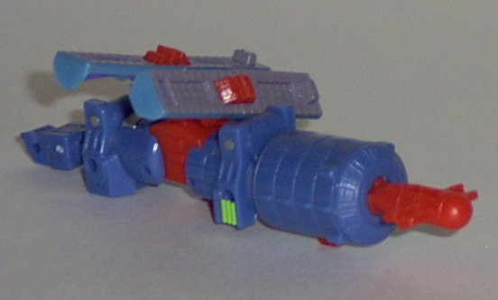
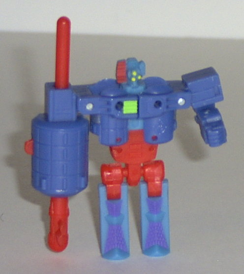
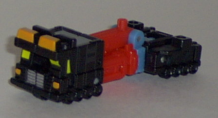
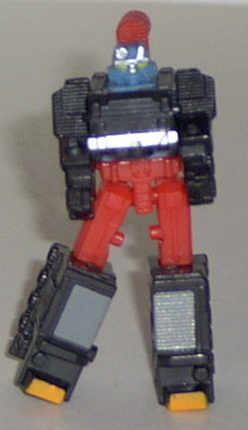
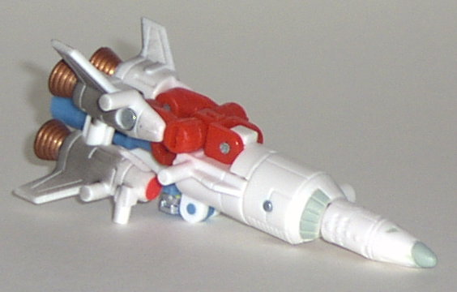
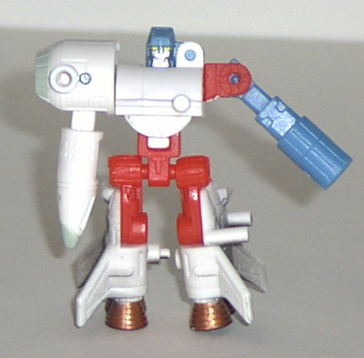
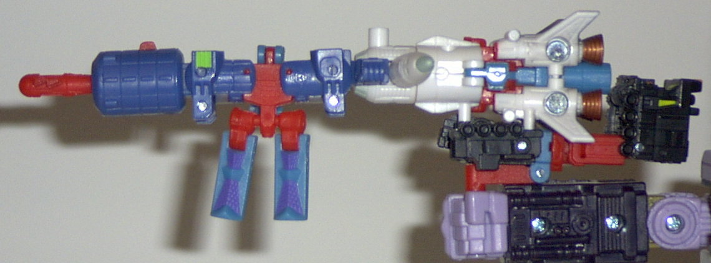

Astroscope
Astroscope
 
Difficulty of Transformation: Easy
Color Scheme : Flat red, blue, sky blue, and some gray, bright green, silver, dull flat purple, and yellow
Individual Rating : 6.4
Space
Team
Allegiance
: Minicon
Size
: Mini-Con (3-pack)
Team Gimmick
: Ability to combine
into a gun, the
Requiem Blaster
Overall Rating
: 5.5
Astroscope


Difficulty of Transformation:
Easy
Color Scheme
: Flat red, blue, sky
blue, and some gray, bright green, silver, dull flat purple, and yellow
Individual Rating
: 6.4
Vehicle mode is a satellite.
While I do appreciate the attempt made at an unconventional alt mode, some
of Astroscope's robot parts stick out rather blatantly in this mode- for
one, his fist just dangles off one end. Also, his robot head is stuck on
an odd-shaped bar protruding out from the shuttle's main body. Given Astroscope's
odd robot head, it really wouldn't have been noticable if it wasn't for
said protrusion, which is a shame. The rest of this mode is nice- the robot
legs split open make convincing solar panels, and the front part of the
satellite is good- plus, if you press the trigger on the bottom, it fires
a missile. Whee. However, Astroscope- in both modes, but this one especially-
is EXTREMELY fragile, as two thirds of his body is held on by weak plastic
indentations. So it comes off much easier than I'd like, even though you
can just pop them back on. Astroscope has two Minicon symbols- one under
his robot head in this mode, and another on the right back side of the
satellite. His Minicon port is on the underside, to the rear of center.
Robot mode is pretty
good- out of all the Space Team modes, I'd have to say that this is the
best. Nice proportions (except for the feet, which are a bit short), and
a beefy chest that make this look like a little buff dude with glasses.
Teeheehee. His articulation leaves something to be desired, though- he
can move at the hips, shoulders, and left elbow, but that's it. His gun-arm
can't even point forward, which was a pretty big oversight, if you ask
me. His color scheme also comes together really nicely in this mode- the
blue and red complement each other well.
Astroscope is an alright
Minicon, but just alright. He's pretty fragile and has a rather shoddy
satellite mode, even if his robot mode is pretty good. Still, my favorite
Minicon out of the Space Team.
Payload


Difficulty of Transformation
: Very
Easy
Color Scheme
: Black, sky blue, flat
red, and some silver, light orange, gray, and yellow
Individual Rating
: 4.9
Vehicle mode is a shuttle
carrier. This mode looks very... incomplete by itself, although you can
place Sky Blast on top of Payload in this mode to dramatically lessen this
effect. It's just that if I hadn't been TOLD that Payload was a shuttle
carrier, I probably wouldn't have guessed. It just looks like the front
half of a vehicle with a bunch of weird-looking parts trailing it, to be
honest. Plus, the robot fists stick out rather blatantly on the backside,
and the shape of the robot head is pretty visible on the top rear side
of the vehicle. Payload's Minicon symbol is on the front right side of
this mode, and his Minicon port is on the bottom of the front left portion
of the vehicle.
In robot mode, Payload
looks square and stiff from a front-on view, but fine from any other angle.
(It's because of the proportions of his vehicle mode, of course.) His articulation
is pretty good- he can move his head, shoulders, hips, and knees. However,
his hips are on tiny ball joints, and they tend to snap off a lot easier
than I'd like. His arms also are too close to his main body, and only move
up and down, so they look kind of odd in practically any position. I like
the robot face, though- a bit squat, but adds quite a bit of personality
and gives him a bit of an asymmetrical look.
Payload has an okay,
if a bit boring, robot mode, but a very uncomplete vehicle mode. Meh.
Sky
Blast


Difficulty of Transformation
: Easy
Color Scheme
: Flat red, white, and
some sky blue, silver, light gray, black, yellow, and metallic bronze
Individual Rating
: 4.8
Vehicle mode is a rocket.
This mode is... so-so. It WOULD be pretty nice, but there's little pegs
and ports sticking out of it everywhere, and it really ruins the "sleek"
look that a rocket is supposed to have. The robot head is also pretty blatantly
on the underside of this mode. The coloring and detailing itself is pretty
nice, though, and the "charred black" fade pattern on the rear end of the
ship is awesome. However, the four thrusters are only held together by
a single shallow peg, so they tend to come undone pretty easily. Also,
Sky Blast's Minicon port is on the center rear engine port of the rocket-
a very odd place to have one, since it looks really weird hanging off of
almost any larger Transformer in this manner. Plus, the piece that the
port is molded onto tends to come off easily, so many times you'll take
Sky Blast off a larger Transformer's Powerlinx port, only to have him come
apart when you do so. Sky Blast's Minicon symbol is on the head of the
nosecone, and he unlike most other Minicons, he has a Powerlinx port, on
the left side of his rocket mode.
In robot mode, Sky Blast
is, quite simply, a piece of crud. His arms are complete jokes- although
I suppose you could reason his Minicon port-arm as some sort of weird cannon,
his rocket nose-cone arm doesn't look like ANYTHING. It doesn't even have
a hand molded into the bottom of it! His feet also look goofy, seeing as
how skinny the upper parts are while the lower parts are these long, flat
pieces made out of his rocket engines. He does have pretty good articulation,
though- he can move at the shoulders (at two points), the waist, the hips,
and the knees, although he only has forward motion in the latter. His robot
head also is well-detailed and cool-looking.
Sky Blast is my least
favorite of the Space Team. He has pegs sticking out everywhere, and a
really really bad robot mode. Ugh.
Requiem
Blaster (Gestalt Form)

Difficulty of Transformation
: Easy
Color Scheme
: Sky blue, white, black,
blue, flat red, and some gray, bright green, yellow, silver, light gray,
dull flat purple, light orange, and metallic bronze
Individual Rating
: 6.0
Out of all the weapon Minicon gestalts (the Star/Dark Saber, the Skyboom shield, and the Requiem Blaster), the Requiem Blaster is probably the best of them all- although granted, that's not saying much. It's still very obviously a combination of three robots, since their color schemes don't match up at all. Still, it's pretty identifiable as a gun- heck, even Astroscope's legs hanging off the bottom look sort of like a second handle for the gun. Sky Blast's nose cone sticking out from the side is the only thing that takes away from it being a pretty good silouhette of a gun. And, it can fire Astroscope's missile, so there you go. It also stays together fairly well.
The Space Minicon Team is a below-average Minicon Team- all have at least one bad mode, and they're all very fragile in their individual forms. The Requiem Blaster is a somewhat cool gestalt weapon, though, and makes a nice accessory for some of the larger Transformers.
Review by Beastbot